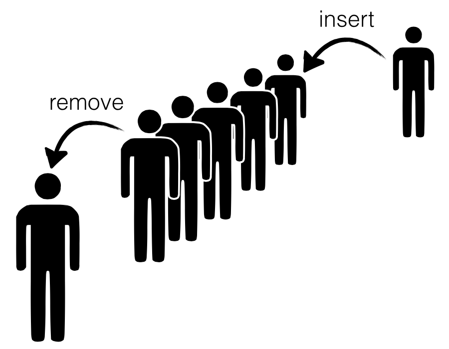
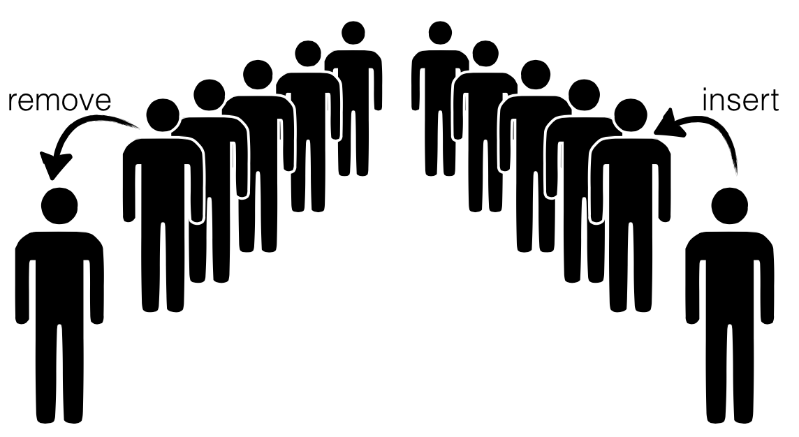

先来看一个恰到好处的案例：它足够简单，不需要展示一大堆代码，又足够丰富，能体现“类型里的信息可以依赖具体值”有什么用。这个案例就是 Chris Okasaki 的惰性队列。这种数据结构依靠一个关键不变量，实现高效的插入和删除。下面用 LiquidHaskell 来保证这个不变量。
译者说明： 本章验证的是队列的结构、长度关系以及操作的输入输出约束。后文关于摊销复杂度和最坏情况复杂度的结论来自数据结构的算法分析，不能仅凭这些精化类型就宣称“LiquidHaskell 已证明运行时间”。上游完整源码还关闭了终止性检查；本章代码中标为练习的规格需要读者补全。
队列#
队列支持插入 insert 和移除 remove，并要求元素的移除顺序与插入顺序一致，也就是 先进先出。

要高效实现队列，我们需要快速访问队首和队尾，因为移除发生在队首，插入发生在队尾。如果允许显式指针和原地修改，做法很直接：使用链表，分别保存头指针和尾指针。不过，不采用这些底层手段，能否仍然高效实现？
Chris Okasaki 的方法很巧妙：用 两个列表 表示队列，分别叫作 front 和 back。
- 插入元素时，把它用
cons加到back的头部。 - 移除元素时，从
front的头部取出一个元素。

问题在于，我们时不时需要把后面的元素转移到前面。例如，可以在同时满足下面两个条件时，把 back 的元素搬到 front：
- 正在调用
remove。 front已经为空。
Okasaki 的第一个观察是：每个元素只会从后面搬到前面 一次。所以，把总成本平均到整个操作序列上，insert 和 remove 的 摊销时间 可以是 O(1)。这几乎很理想，但仍有少数不走运的 remove 要一次承担搬运成本：当 front 为空时，单次操作的延迟可能达到 O(n)，这里 n 是累计操作次数。
第二个观察解决了这个问题：维护一个简单的 平衡不变量 即可：
front 的长度 ≥ back 的长度。
如果列表是惰性的，即只有真正需要头部元素时才构造相应部分，按照这里讨论的算法分析，单次 remove 的最坏时间就能限制在 O(log n)，不必由某一次操作承担全部搬运成本。
下面实现这个队列，并让 LiquidHaskell 检查关键不变量。我们需要三样东西：
- 一个列表类型，以及跟踪列表
size的方式。 - 一个把平衡不变量写进类型的
Queue。 insert、remove和元素转移操作的实现。
带长度的列表#
第一步很简单，先定义类型：
data SList a = SL { size :: Int, elems :: [a] }
这里专门保存 size 字段。否则，每次计算长度都要遍历列表，线性时间的成本会破坏 Okasaki 的复杂度分析。原论文也给出了不需要缓存长度的变体，不过这里先不讨论。
怎样确保 size 保存的是 elems 的 真实长度，而不是随便填进去的数字？先写一个度量真实长度的函数：
{-@ measure realSize @-}
realSize :: [a] -> Int
realSize [] = 0
realSize (_:xs) = 1 + realSize xs
然后给 SList 写一个精化数据类型，让 size 字段必须等于列表的真实长度：
{-@ data SList a = SL {
size :: Nat
, elems :: {v:[a] | realSize v = size}
}
@-}
用两个小例子检查一下：
okList = SL 1 ["cat"] -- accepted
badList = SL 1 [] -- rejected
再定义一个别名，表示长度恰好为 N 的列表：
{-@ type SListN a N = {v:SList a | size v = N} @-}
有了这些，就可以定义 SList 的基本 API。构造列表需要 nil 和 cons：
{-@ nil :: SListN a 0 @-}
nil = SL 0 []
{-@ cons :: a -> xs:SList a -> SListN a {size xs + 1} @-}
cons x (SL n xs) = SL (n+1) (x:xs)
练习：拆开列表#
下面的 hd 和 tl 分别取列表头部和剩余部分。修改规格或实现，使定义能够通过检查。
{-@ tl :: xs:SList a -> SListN a {size xs - 1} @-}
tl (SL n (_:xs)) = SL (n-1) xs
tl _ = die "empty SList"
{-@ hd :: xs:SList a -> a @-}
hd (SL _ (x:_)) = x
hd _ = die "empty SList"
提示： 完成之后，okHd 应通过检查，badHd 应被拒绝。
{-@ okList :: SListN String 1 @-}
okHd = hd okList -- accepted
badHd = hd (tl okList) -- rejected
队列类型#
Queue 可以直接表示为 front 和 back 两个列表，并要求后者长度不超过前者：
{-@ data Queue a = Q {
front :: SList a
, back :: SListLE a (size front)
}
@-}
data Queue a = Q
{ front :: SList a
, back :: SList a
}
别名 SListLE a N 表示元素个数至多为 N 的列表：
{-@ type SListLE a N = {v:SList a | size v <= N} @-}
简单检查一下：在这些约束下，我们无法构造违反平衡不变量的队列。
okQ = Q okList nil -- accepted, |front| > |back|
badQ = Q nil okList -- rejected, |front| < |back|
队列操作#
接下来只需定义 Queue 的 API。下面的代码与 Okasaki 的版本基本一致；原作者使用 front 和 back，代替论文里的 left 和 right。
空队列 的前后两个列表都为空：
emp = Q nil nil
移除元素 时，通过 hd 取出 front 的头部，再通过 tl 得到剩余部分。注意，remove 应当只用于非空队列；结合前面“前部长度不小于后部长度”的不变量，这就能保证调用 hd、tl 是安全的。
remove (Q f b) = (hd f, makeq (tl f) b)
练习：为什么不用模式匹配？#
为什么这里没有直接用模式匹配拆开列表，而是像 Okasaki 一样显式调用 hd 和 tl？请解释原因。
练习：队列长度#
如果你完成了前面的“拆开列表”练习，就会发现 remove 目前还会报类型错误：当 f 为空时，调用 hd 和 tl 可能失败。
- 写一个度量函数，描述队列的长度。
- 用它补全下面的
QueueN定义。 - 给
remove写一个类型，让检查器能够证明内部的hd、tl调用是安全的。
提示： 完成之后，okRemove 应通过，badRemove 应被拒绝，而 emp 应具有下面给出的类型。
-- | Queues of size `N`
{-@ type QueueN a N = {v:Queue a | true} @-}
okRemove = remove example2Q -- accept
badRemove = remove example0Q -- reject
{-@ emp :: QueueN _ 0 @-}
{-@ example2Q :: QueueN _ 2 @-}
example2Q = Q (1 `cons` (2 `cons` nil)) nil
{-@ example0Q :: QueueN _ 0 @-}
example0Q = Q nil nil
插入元素 时，把新元素 cons 到 back，然后调用智能构造函数 makeq，让结果重新满足平衡不变量：
insert e (Q f b) = makeq f (e `cons` b)
练习：插入#
给 insert 写一个类型，使 LiquidHaskell 接受 replicate 和 okReplicate，同时拒绝 badReplicate。
{-@ replicate :: n:Nat -> a -> QueueN a n @-}
replicate 0 _ = emp
replicate n x = insert x (replicate (n-1) x)
{-@ okReplicate :: QueueN _ 3 @-}
okReplicate = replicate 3 "Yeah!" -- accept
{-@ badReplicate :: QueueN _ 3 @-}
badReplicate = replicate 1 "No!" -- reject
维护不变量 的主要工作由 makeq 完成。它接收前部列表 f 和后部列表 b：如果已经平衡，直接构造 Queue；否则调用接下来介绍的 rot，将后部元素转移到前部。
{-@ makeq :: f:SList a -> b:SList a -> QueueN a {size f + size b} @-}
makeq f b
| size b <= size f = Q f b
| otherwise = Q (rot f b nil) nil
练习：旋转（★★）#
rot 只应在 back 比 front 恰好多一个元素 时调用，因为我们的操作不会让差距继续扩大。它的计算顺序经过安排，整个计算完成前，列表头部就能较快地产生；结合惰性求值，这构成了最坏情况效率保证的基础。
为 rot 写一个类型，使它通过检查，并使 makeq 的类型也得到验证。
提示： 你可能还需要修改 makeq 的前置条件，写清楚 f 与 b 的长度关系。
rot f b acc
| size f == 0 = hd b `cons` acc
| otherwise = hd f `cons` rot (tl f) (tl b) (hd b `cons` acc)
练习：转移元素#
给 take 写类型签名：它从输入队列 q 中取出 n 个元素，放进一个新的输出队列，同时返回剩余队列。完成后，okTake 应通过，badTake 应被拒绝。
take :: Int -> Queue a -> (Queue a, Queue a)
take 0 q = (emp , q)
take n q = (insert x out , q'')
where
(x , q') = remove q
(out, q'') = take (n-1) q'
{-@ okTake :: (QueueN _ 2, QueueN _ 1) @-}
okTake = take 2 exampleQ -- accept
badTake = take 10 exampleQ -- reject
exampleQ = insert "nal" $ insert "bob" $ insert "alice" $ emp
回顾#
我们已经用 LiquidHaskell 表达并检查了 Okasaki 惰性队列的重要不变量。这个案例值得留意的地方有三个：
- 精化类型能够表达对算法效率至关重要的不变量。
- 程序根据保存的
size作出判断，从而持续维护这些不变量。 - 实现仍然很短，能够把数据结构本身的思路清楚地呈现出来。